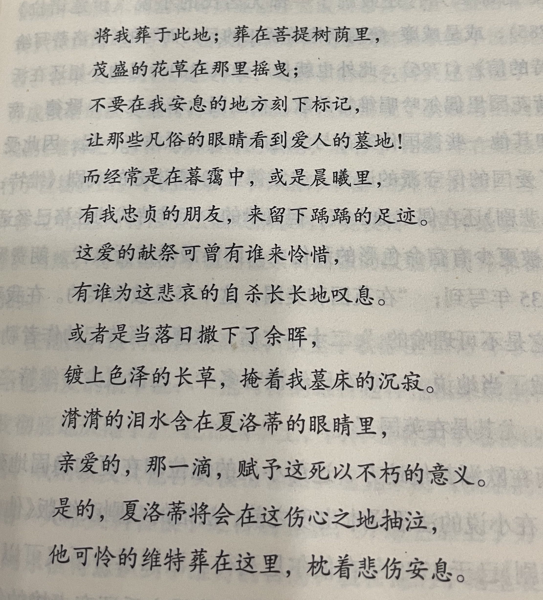

《安娜卡列尼娜》读后感
幸福的家庭都是相似的，不幸的家庭各有各的不幸。
婚姻和家庭是什么？ 我曾以为是，两个人的相互支持相濡以沫。 但实际上，它更是两个家族的利益连结、封建时代财产地位的传承仪式、一条老朽的用于捆绑责任的绳子。它与爱情无关，却是为因为爱情而漂浮上天的两人设置的安全网，没有它，摔在地上的悲剧只是早晚而已。
人类的情感如此丰富和微妙，托尔斯泰竟然能将其精髓的那些一闪而过的时刻逮住并准确地加以描绘。我真的还从没意识到文字能构筑如此微妙难以言明又让我感觉到美的情感体验，第六部四五两章这段瓦莲卡和谢尔盖的支线故事[1]，当时看完我击节赞叹，托翁之笔妙也！
还有恋爱期间的小鹿乱撞眉目传情、婚姻之外的动心、婚姻之内的幸福与矛盾、那个时代男人与女人对待婚姻的态度——男人认为婚姻是生活的一部分而不会是全部和一份责任，但男人总希望有外界的自由生活，有人忙事业有人玩风流；女人则希望所爱的男人能够一直陪伴在身边，过量的爱会逐渐衍化成嫉妒，这爱情的杀手。
PS：在一个月之后，我偶然间读完了歌德很出名的一本小说《少年维特之烦恼》，突然发现，原来安娜最后自杀的选择无独有偶。维特同样也遇到了爱情的苦恼，如同麻花绳一样打了结。他的爱情太过浓烈，这就像是绞刑架上结实的绳子，他越挣扎就在他的脖子上缠的越紧。那难道炽烈的爱得不到回应终局只有走向死亡吗，是他们被情感所支配吗？没有体验那样澎湃情感的人又怎么可以站在高地上妄加评判呢？
唉，特别喜欢歌德自己的这首十四行诗。

除了最细微的那些感情，在革命前夜的沙俄的广阔的生活画卷，也被托尔斯泰以大量人物——主要包括官僚、贵族、学者、地主、农民——的思想言行泼洒而成。举重若轻，只不过代价是极大的文本量和让人昏昏欲睡的细节轰炸。第27章里有非常有意思的三个想法不同的地主对话，就像是某种俄国农村社会考察报告，切入问题的各个角度都清晰而生动。
这就是一代文豪的实力，可惜他所处的那个时代与我的共鸣太少了，看他的作品就像看着一座残破的宫殿，但仍能从断壁残垣中对当年宫殿宏伟而精致感到震撼。
不过，虽然文学和艺术上成就辉煌，但托尔斯泰以男主角列文的口吻大量倾吐的他自己的哲学观点依然令我感到幼稚和无趣。尤其是全书最后一节的后记里，基本充斥着与主线剧情完全无关的哲学思想的自我表达，而不是对这个悲剧结局的进一步阐述，这让我略显失望。
看到列宁对托尔斯泰的评价，可谓一针见血：
托尔斯泰以巨大的力量和真诚鞭笞了统治阶级，十分鲜明地揭露了现代社会所借以维持的一切制度——教会、法庭、军国主义、“合法”婚姻、资产阶级科学——的内在的虚伪。 他说的话是代表整个俄罗斯千百万人民群众的，人民群众已经憎恨现代生活的主宰者，但是还没有达到去同他们进行自觉的、一贯的、坚持到底的、不可调和的斗争的程度。
托尔斯泰逝世了，革命前的俄国也已成为过去，它的软弱和无力已被这位天才艺术家表现在他的哲学里，描绘在他的作品中。但是在他的遗产里，还有着没有成为过去而是属于未来的东西。俄国无产阶级正在接受这份遗产，研究这份遗产。
俄国无产阶级要向被剥削劳动群众阐明托尔斯泰对国家、教会、土地私有制的批判的意义，——这样做不是为了让群众局限于自我修身和对圣洁生活的憧憬，而是让他们振奋起来对沙皇君主制和地主土地占有制进行新的打击，这种君主制和土地占有制在 1905年只是受了些轻伤，必须把它们消灭干净。
俄国无产阶级要向群众阐明托尔斯泰对资本主义的批判，——这样做不是为了让群众局限于诅咒资本和金钱势力，而是让他们学会在自己的生活和斗争中处处依靠资本主义的技术成就和社会成就，学会把自己团结成一支社会主义战士的百万大军，去推翻资本主义，去创造一个人民不再贫困、人不再剥削人的新社会。